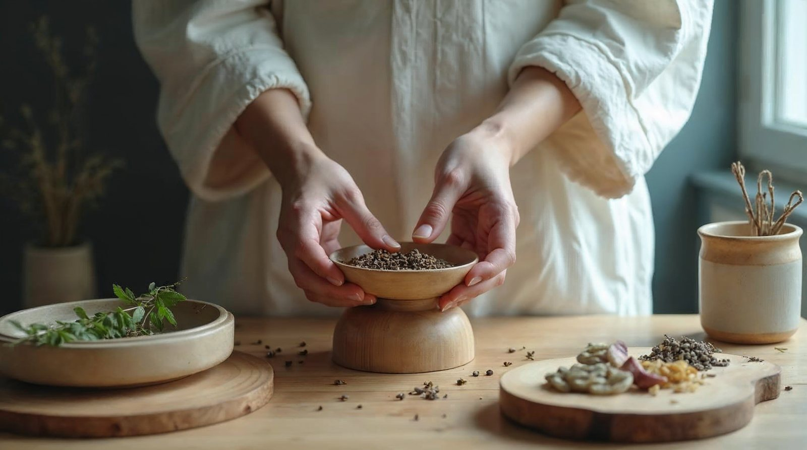
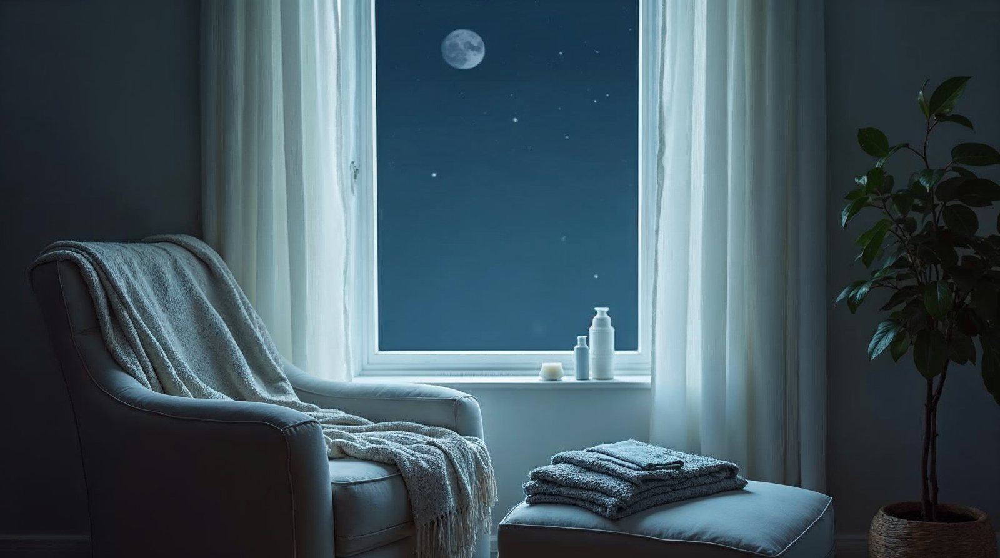

이종호 한의사 감수좋은꿈참사랑한의원 대표원장 (한의사 면허번호 19769)발행 2026-11-22 · 수정 2026-11-26
이 글의 차례
- 왜 시계를 보면 잠이 더 멀어질 수 있나요
- 시계를 보는 습관은 왜 고리처럼 이어질까요?
- 새벽에 같은 시각에 깨는 건 왜 그럴까요?
- 낮 생활도 밤의 고리와 이어져 있어요
- 예를 들면 이런 경우입니다
- 스스로 점검해 보세요
- 먼저 이렇게 여쭙니다
- 일상에서 먼저 해 볼 수 있는 것
- 침실, 이렇게 정리해 보세요
- 시계를 치우면 더 불안하다면
- 시계 대신 이렇게 해 보세요
- 자주 하는 오해
- 한의원에서 함께 살필 수 있는 경우
- 저녁 시간이 밤을 만들어요
- 처음 오시면 이렇게 살펴봅니다
- 얼마나 지켜보고, 언제 진료를 받을까요
- 이렇게 기록해 오시면 상담이 쉬워집니다
- 이런 증상은 먼저 확인이 필요합니다
밤에 자꾸 시계를 본다면 시계를 시야에서 치우는 것부터 시작해 보세요. "벌써 세 시네, 몇 시간밖에 못 자겠다" 하는 계산이 시작되면 마음이 바빠지고 몸도 긴장해 다시 잠들기가 더 어려워질 수 있습니다. 시간을 확인하는 습관 자체가 잠을 방해하는 고리가 되기도 합니다.
진료실에서 이런 말씀을 자주 들어요. "원장님, 꼭 새벽 세 시 반에 깨요. 시계를 보면 딱 그 시각이에요." 그 마음 너무 잘 알아요. 깨면 몇 시인지 궁금한 게 당연하잖아요. 그런데 그러니까 사실은 그 확인 한 번이 다시 잠드는 길을 막는 경우가 많아요.
그래서 저는 시계 보는 습관을 고치라고 다그치지 않아요. 왜 자꾸 보게 되는지, 보고 나면 어떤 생각이 드는지를 먼저 같이 들어 보는 거예요.
왜 시계를 보면 잠이 더 멀어질 수 있나요
- 남은 수면 시간을 계산하는 순간 내일에 대한 걱정이 시작되어 몸이 깨어 있는 쪽으로 기울 수 있습니다.
- 휴대전화로 시간을 보면 화면 빛과 알림이 함께 들어와 정신이 더 또렷해질 수 있습니다.
- "또 깼다"는 확인이 반복되면 밤마다 같은 시각에 깨는 것에 더 예민해질 수 있습니다.
- 잠을 잘 자야 한다는 부담이 클수록 오히려 잠이 멀어지는 경우가 있습니다.
여기서 두 가지를 나눠서 보셔야 해요. 밤에 깨는 것과 다시 잠들지 못하는 것은 다른 얘기예요. 밤중에 잠깐씩 깨는 건 사실 누구에게나 있는 일이에요. 잠은 얕아졌다 깊어졌다를 밤새 여러 번 되풀이하는데, 얕아지는 순간 잠깐 깨는 건 자연스러운 거거든요. 대부분은 금방 다시 잠들어서 아침에 기억을 못 하는 거고요.
문제는 깬 다음이에요. 시계를 보고 계산을 시작하는 순간, 잠깐 깼다 다시 자는 자연스러운 흐름이 끊기는 거예요. 그래서 저는 깨는 걸 막으려 하기보다 깬 다음에 다시 잠드는 길을 열어 두는 쪽을 함께 봐요.
우리 몸에는 위험할 때 켜지는 경보 장치 같은 신경이 있어요. 옛날 사람들은 밤에 사자나 호랑이 소리가 나면 바로 깨서 도망쳐야 했으니까요. 그런데 요즘은 사자 대신 '내일 일 걱정'이 그 경보를 켜요. 시계를 보고 계산하는 순간이 바로 그 스위치를 누르는 순간인 거예요. 한번 켜진 경보는 바로 꺼지지 않아서, 몸은 피곤한데 머리는 말똥말똥해지는 거고요.
시계를 보는 습관은 왜 고리처럼 이어질까요?
왜인 줄 아세요? 시간을 확인하면 '남은 시간'이 생기거든요. "세 시네, 출근까지 네 시간." 이 계산이 시작되면 몸은 내일을 준비해야 한다며 긴장하고, 긴장한 몸은 쉽게 잠들지 못해요. 그렇게 뒤척이다 다시 시계를 보면 "벌써 네 시"가 되고, 걱정은 더 커지죠.
이게 며칠 반복되면 몸은 그 시각에 깨는 걸 더 예민하게 기억해요. 그래서 시계를 안 봐도 그 시각에 눈이 떠지는 것 같은 느낌이 드는 거예요. 고리를 끊는 가장 쉬운 방법이 시계를 시야에서 치우는 거예요.
잠을 잘 자야 한다는 부담도 고리를 키워요. "오늘은 꼭 푹 자야 해" 하고 누우면, 몸은 그걸 해내야 할 일로 받아들여 오히려 긴장하거든요. 시험 전날 잠이 더 안 오는 것과 비슷한 거예요. 그래서 저는 잘 자는 걸 목표로 삼기보다 편하게 쉬는 걸 목표로 삼으시라고 말씀드려요. 쉬다 보면 잠은 따라오는 경우가 많아요.
새벽에 같은 시각에 깨는 건 왜 그럴까요?
새벽에 자주 깨는 데는 여러 이유가 있어요. 하나씩 짚어 보면 손볼 곳이 보이기도 해요.
- 화장실 때문에 깬다면 저녁 늦게 마신 물이나 차, 술이 영향을 줄 수 있어요.
- 새벽에 방이 추워져서 깬다면 잠자리 온도부터 살펴봐요.
- 저녁에 술을 드신 날 새벽에 깬다면, 술은 잠드는 건 돕는 것 같아도 새벽 잠을 얕게 만들기 쉬워요.
- 걱정거리가 있는 시기에는 새벽에 깨서 생각이 이어지는 경우가 많아요.
- 나이가 들면서 새벽잠이 얕아지는 것도 원래 자연스러운 변화예요.
이유가 다르면 해 볼 일도 달라져요. 그래서 깨는 시각만이 아니라 깰 때 어떤 상황인지도 함께 여쭤봐요.
낮 생활도 밤의 고리와 이어져 있어요
밤에 잘 못 잔 다음 날은 낮잠으로 채우고 싶고, 커피도 한 잔 더 마시게 되죠. 그런데 그게 그날 밤 잠을 다시 얕게 만들어서 또 새벽에 깨고 시계를 보게 되는 고리로 이어지기 쉬워요. 그래서 밤의 고리를 끊으려면 낮도 같이 봐야 해요.
- 못 잔 다음 날에도 일어나는 시각은 평소처럼 지키기
- 낮잠은 꼭 필요할 때만 이른 오후에 20~30분 이내로
- 해 있을 때 밖에서 30분쯤 천천히 걷기
- 커피는 평소 양을 넘기지 않기
운동을 세게 하실 필요는 없어요. 천천히 오래 걷는 게 몸의 긴장을 풀고 밤에 잠을 끌어당기는 힘을 키우는 데 도움이 되는 경우가 많아요. 약하게, 대신 매일이요.
예를 들면 이런 경우입니다
- 예를 들어 머리맡 휴대전화로 시간을 확인하다가 알림까지 보게 되는 경우라면, 휴대전화를 침대에서 손이 닿지 않는 곳에 두고 알람 시계를 따로 쓰는 것부터 해 봐요.
- 예를 들어 깰 때마다 다음 날 회의 걱정이 떠오르는 경우라면, 자기 전에 내일 할 일을 종이에 적어 두고 "적어 뒀으니 내일 보자"고 넘기는 연습을 해 봐요.
- 예를 들어 벽시계 초침 소리가 신경 쓰이는 경우라면, 소리 없는 시계로 바꾸거나 침실 밖으로 옮기는 거예요.
스스로 점검해 보세요
- 깨면 가장 먼저 시계나 휴대전화를 본다
- 시간을 보면 남은 수면 시간을 계산한다
- 깨는 시각이 거의 매일 비슷하다
- 다시 잠들기까지 한참 걸리는 날이 일주일에 사흘 이상이다
- 침대 옆에 불빛이 나는 시계나 기기가 있다
- 저녁에 술이나 커피를 마시는 날이 많다
- 잠자리에 들면 '오늘은 잘 잘 수 있을까' 걱정이 먼저 든다
해당하는 항목이 여럿이라면 진료 때 표시해서 가져와 주세요.
먼저 이렇게 여쭙니다
- 밤에 깨면 바로 시계나 휴대전화를 확인하나요?
- 시간을 본 뒤 남은 수면 시간을 계산하게 되나요?
- 다시 잠들기까지 보통 얼마나 걸리나요?
- 깨는 시각이 매일 비슷한가요?
- 이런 밤이 일주일에 며칠 정도 있나요?
일상에서 먼저 해 볼 수 있는 것
- 시계 화면을 벽 쪽으로 돌리거나 눈에 띄지 않는 곳에 두기
- 휴대전화는 알람만 켜 두고 침대에서 팔이 닿지 않는 곳에 두기
- 깨어도 "누워서 쉬는 것만으로도 몸은 쉬고 있다"고 스스로 말해 주기
- 한참 뒤척여도 잠이 오지 않으면 어두운 불빛 아래 조용히 앉아 있다가 졸릴 때 다시 눕기
- 다음 날 아침에 밤에 깬 횟수만 간단히 적어 두기
숙제는 하나만 드릴게요. 오늘 밤부터 침대 옆 시계를 벽 쪽으로 돌려 두세요. 딴 건 하던 대로 하셔도 돼요. 이 하나만으로도 밤이 전보다 조금 조용해졌다는 분들이 꽤 계세요.
침실, 이렇게 정리해 보세요
- 불빛이 나는 디지털 시계는 벽 쪽으로 돌리거나 서랍 위 멀리 두기
- 휴대전화는 알람만 켜 두고 방 반대편이나 거실에서 충전하기
- 초침 소리가 나는 시계는 소리 없는 것으로 바꾸기
- 커튼으로 바깥 불빛을 가리고, 작은 불빛이 나는 기기는 덮어 두기
- 방은 조금 서늘하게, 이불은 따뜻하게 맞추기
처음 며칠은 시계가 안 보이니 오히려 더 궁금하고 불안할 수 있어요. 그것도 원래 그래요. 습관을 바꿀 때는 처음이 제일 어색하거든요. 일주일쯤 지나면 시간을 몰라도 괜찮다는 느낌이 조금씩 드는 분들이 많아요.
시계를 치우면 더 불안하다면
알람을 못 들을까 봐, 늦잠을 잘까 봐 걱정되어 시계를 자꾸 보는 분도 계세요. 그럴 땐 알람을 두 개 맞춰 두고 "알람이 깨워 줄 거야"라고 마음을 맡겨 보세요. 시간은 알람이 책임지고, 나는 쉬기만 하면 되는 거예요.
중요한 일정이 있는 전날일수록 시계를 더 보게 되죠. 그런 날은 잠을 조금 설쳐도 하루는 버틸 수 있다고 스스로에게 말해 주세요. 하룻밤 덜 잔다고 큰일이 나지는 않아요. 그 마음이 오히려 잠을 불러오는 경우가 많아요.
시계 대신 이렇게 해 보세요
깼을 때 할 일이 정해져 있으면 시계에 손이 덜 가요. 아래 중 편한 걸 하나 골라 보세요.
- 코로 넷을 세며 천천히 들이쉬고, 입으로 여섯을 세며 길게 내쉬기
- 발끝부터 종아리, 허벅지, 배, 어깨, 얼굴 순서로 힘을 하나씩 빼 보기
- 좋아하는 산책길이나 여행지를 머릿속으로 천천히 걸어 보기
- "누워서 쉬는 것만으로도 몸은 쉬고 있어"라고 속으로 말해 주기
잘 자려고 애쓰는 게 아니라 그냥 몸을 편하게 내려놓고 쉬는 거예요. 잠은 붙잡으려 하면 달아나고, 내려놓으면 찾아오는 경우가 많거든요.
깬 채로 한참이 지났다고 느껴지면, 시계를 보는 대신 잠깐 일어나 어두운 거실에 앉아 있다가 졸릴 때 다시 누우세요. 침대에서 오래 뒤척이며 애쓰는 것보다 잠깐 자리를 바꾸는 게 몸을 덜 긴장시키는 경우가 많아요. 거실에서도 휴대전화는 켜지 마시고요. 조용한 음악이나 종이책 몇 쪽 정도가 무난해요.
자주 하는 오해
- 몇 시인지 알아야 마음이 놓인다고 생각하기 쉬운데, 시간을 알면 오히려 계산이 시작되어 마음이 더 바빠지는 경우가 많아요.
- 밤에 깨면 그날 잠은 망쳤다고 여기기 쉽지만, 중간에 깨도 다시 잠들면 몸은 충분히 쉬는 경우가 많아요.
- 잠이 안 오면 누워서 휴대전화라도 보며 시간을 보내자는 분도 있는데, 화면 빛과 내용이 정신을 더 깨워서 다시 잠들기가 더 어려워져요.
- 깨는 시각에 맞춰 미리 일어나 버리면 해결된다고 생각하는 분도 있지만, 그러면 잠이 더 짧아지고 낮에 힘들어지기 쉬워요.

한의원에서 함께 살필 수 있는 경우
- 밤에 깬 뒤 생각이 꼬리를 물어 다시 잠들기 어려운 경우, 저녁 시간의 긴장과 걱정의 모양을 함께 살핍니다.
- 새벽 같은 시각에 자주 깨는 경우, 낮 활동량과 소화 상태, 몸의 온기를 함께 살핍니다.
- 잠을 못 잘까 하는 걱정 때문에 잠자리가 불편해진 경우, 하루 리듬 전체를 함께 살핍니다.
좋은꿈참사랑한의원에서는 깨는 시각과 그때 드는 생각을 먼저 충분히 듣고, 진맥을 기본으로 하고 필요하다고 판단될 때 설진을 더해 몸의 긴장과 소화 상태를 살핍니다. 상태에 맞춰 침이나 한약 상담 등을 정하고, 귀가 전에는 일주일 동안 해 볼 잠자리 정리 방법을 함께 정합니다.
침실에 들어가면 하루를 내려놓는 작은 순서를 만들어 보세요. 불을 끄기 전에 물 한 모금 마시고, 이불을 정리하고, 숨을 몇 번 천천히 쉬는 것처럼요. 매일 같은 순서를 반복하면 몸은 그 순서만으로도 이제 쉴 때라는 걸 알아차려요.
저녁 시간이 밤을 만들어요
밤에 깨서 걱정이 꼬리를 무는 분이라면 저녁 시간을 한번 살펴보세요. 걱정은 밤에 처음 생기는 게 아니라 낮에 미뤄 둔 게 밤에 찾아오는 경우가 많거든요.
- 저녁 무렵 10분쯤 걱정되는 일과 내일 할 일을 종이에 적어 두기
- 잠들기 한 시간 전부터는 일과 관련된 메시지 확인 줄이기
- 커피는 오후 이른 시간까지만, 술은 잠을 얕게 할 수 있어 저녁엔 줄이기
- 잠들기 전 따뜻한 물로 씻고 조명을 낮춰 몸에 밤이라는 신호 주기
한의학에서는 밤에 쉽게 깨고 생각이 많아지는 모양을 몸 전체의 긴장, 소화, 몸의 온기와 이어서 봐요. 저녁만 되면 머리가 뜨겁고 가슴이 답답한 분, 손발이 차고 소화가 더딘 분처럼 깨는 모양도 사람마다 달라서 살피는 곳도 달라지는 거예요.
처음 오시면 이렇게 살펴봅니다
모든 분의 맥을 먼저 짚고 시작해요. 그다음 깨는 시각과 횟수, 깰 때의 상황과 드는 생각, 다시 잠들기까지 걸리는 시간을 여쭤봐요. 저녁에 무엇을 하시는지, 커피와 술, 화면 사용 시간도 함께 여쭙고요.
필요하다고 판단되면 혀를 보는 설진을 더하고, 목과 어깨의 긴장, 배의 상태도 살펴요. 그 뒤 침이나 한약 상담 가운데 지금 상태에 맞는 방법을 함께 정해요. 한약을 생각할 때는 드시는 수면제나 건강식품을 먼저 확인하고, 처방받은 약은 처방한 의사와 상의 없이 줄이거나 끊지 않아요.
보통은 한 달쯤 지켜보고 다시 판단하는 경우가 많아요. 그 사이 기록을 보며 깨는 횟수와 다시 잠드는 데 걸리는 시간이 어떻게 움직였는지 함께 확인해요.
침은 목과 어깨, 가슴이 답답하게 굳어 있는 긴장을 살피며 쓰는 경우가 많고, 소화나 몸의 온기, 저녁마다 오르는 열감 같은 모양이 함께 있다면 한약 상담을 이야기하기도 해요. 무엇을 할지는 이유를 먼저 설명드리고 함께 정하고, 한약을 드시다 불편하면 복용을 멈추고 연락 주세요.
얼마나 지켜보고, 언제 진료를 받을까요
시계를 치우고 깼을 때 할 일을 정해서 2~3주쯤 해 보세요. 그래도 밤마다 한참을 깨어 있거나 낮에 피로가 쌓여 일상이 힘들다면 혼자 애쓰지 마시고 진료를 받아 보세요.

이렇게 기록해 오시면 상담이 쉬워집니다
- 밤에 깬 횟수와 대략의 시각(아침에 떠올려 적기)
- 깼을 때 주로 드는 생각이나 걱정
- 저녁에 한 일, 커피·술, 잠들기 전 화면 사용 시간
- 복용 중인 수면제나 건강식품
기록은 아침에 일어나서 떠오르는 대로 적으시면 돼요. 밤에 시계를 보며 적으면 이 글에서 말씀드린 고리가 다시 시작되거든요. "새벽에 두 번쯤 깼고, 두 번째는 한참 깨어 있었다" 정도면 충분해요.
이런 증상은 먼저 확인이 필요합니다
- 불안과 걱정이 잠뿐 아니라 낮 생활까지 크게 흔드는 경우
- 우울감이 깊거나 스스로를 해칠 생각이 드는 경우(☎ 109로 바로 연락하세요)
이런 신호가 있으면 한의원보다 가까운 병원이나 응급실을 먼저 찾으세요.
밤에 깨는 건 고장이 아니에요. 깬 다음을 조금 다르게 보내 보는 거예요. 시계를 치우는 작은 일 하나에서 시작해도 충분해요. 궁금한 건 기록을 들고 오셔서 편하게 물어보세요.

여쭙는 것
- 밤에 깨면 바로 시계나 휴대전화를 확인하나요?
- 시간을 본 뒤 남은 수면 시간을 계산하게 되나요?
- 다시 잠들기까지 보통 얼마나 걸리나요?
생활에서 해 볼 것
- 시계 화면을 벽 쪽으로 돌리거나 눈에 띄지 않는 곳에 두기
- 휴대전화는 알람만 켜 두고 침대에서 팔이 닿지 않는 곳에 두기
- 깨어도 "누워서 쉬는 것만으로도 몸은 쉬고 있다"고 스스로 말해 주기
한의원에서 함께 살필 것
- 밤에 깬 뒤 생각이 꼬리를 물어 다시 잠들기 어려운 경우, 저녁 시간의 긴장과 걱정…
- 새벽 같은 시각에 자주 깨는 경우, 낮 활동량과 소화 상태, 몸의 온기를 함께 살핍…
- 잠을 못 잘까 하는 걱정 때문에 잠자리가 불편해진 경우, 하루 리듬 전체를 함께 살…
먼저 확인이 필요한 신호
- 불안과 걱정이 잠뿐 아니라 낮 생활까지 크게 흔드는 경우
- 우울감이 깊거나 스스로를 해칠 생각이 드는 경우(109로 바로 연락하세요)
한눈에 보는 표
| 구분 | 핵심 |
|---|---|
| 여쭙는 것 | 밤에 깨면 바로 시계나 휴대전화를 확인하나요? 시간을 본 뒤 남은 수면 시간을 계산하게 되나요? |
| 생활에서 해 볼 것 | 시계 화면을 벽 쪽으로 돌리거나 눈에 띄지 않는 곳에 두기 휴대전화는 알람만 켜 두고 침대에서 팔이 닿지 않는 곳에 두기 |
| 한의원에서 함께 살필 것 | 밤에 깬 뒤 생각이 꼬리를 물어 다시 잠들기 어려운 경우, 저녁 시간의 긴장과 걱정의 모양을 함께 살핍니다. 새벽 같은 시각에 자주 깨는 경우, 낮 활동량과 소화 상태, 몸의 온기를 함께 살핍니다. |
| 먼저 확인이 필요한 신호 | 불안과 걱정이 잠뿐 아니라 낮 생활까지 크게 흔드는 경우 우울감이 깊거나 스스로를 해칠 생각이 드는 경우(109로 바로 연락하세요) |
자주 묻는 질문
알람도 꺼야 하나요?
일어날 시각을 지키려면 알람은 필요합니다. 밤 동안 시간을 확인하지 않는 것이 목적입니다.
깨어 있는 동안 휴대전화를 봐도 되나요?
화면 빛과 내용이 정신을 깨울 수 있어 권하지 않습니다. 조용한 음악이나 천천히 숨 고르기 정도가 무난합니다.
몇 시에 깼는지 모르면 기록을 어떻게 하나요?
정확한 시각보다 "새벽에 두 번쯤 깼다"처럼 대략 적어도 충분합니다.
이런 고민도 한의원에서 상담하나요?
잠드는 모양과 깨는 모양, 낮의 긴장과 소화를 함께 여쭙고 생활 리듬 속에서 살핍니다.
좋은꿈참사랑한의원은 재진 때 지난번 이야기부터 이어서 여쭙니다. 진료시간과 예약은 오시는 길에서 확인하세요.
어디서 상담받을 수 있나요?
좋은꿈참사랑한의원은 서울 동작구 만양로2길 2 신성빌딩 3층·5층(서울 동작구 상도동, 7호선 상도역 3번 출구 근처)에 있습니다. 한의사 3명(이종호 대표원장, 조영기 수석진료원장, 정원영 진료원장)이 진료합니다. 진료시간은 평일 09:30~20:00(점심 13:00~14:00), 토·일·공휴일 09:30~15:00이며, 방문 전 전화로 확인을 권합니다. 예약은 네이버 예약, 카카오톡 상담, 전화 02-815-7510로 받습니다.
이 글은 일반적인 건강 정보이며 개인의 진단이나 치료를 대신하지 않습니다. 증상이 있거나 복용 중인 약이 있다면 진료를 통해 확인하세요. 치료 효과는 개인마다 다를 수 있습니다.
작성 기준: 일반적으로 알려져 있는 건강 정보를 참고해 정리했습니다(대표원장 감수). 증상 기록은 1~2주 동안 하루 1회, 비슷한 시간에 적어 오시면 지난 상태와 비교하기 쉽습니다.